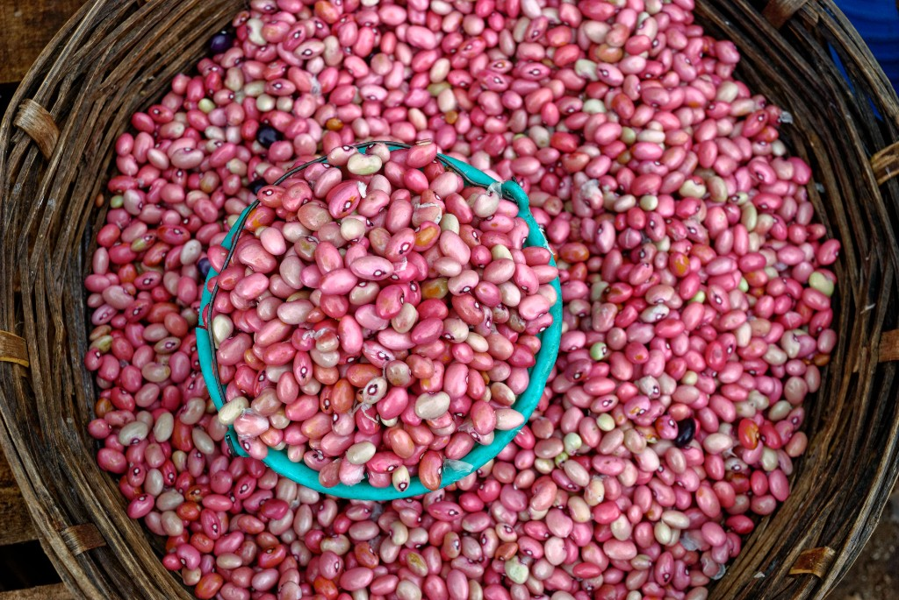

Beans (Phaseolus vulgaris)
First Cultivated: ~5000 BCE
Optimal Climate: Warm temperate to subtropical
Water Requirement: 14 to 20 inches annually
Common beans formed one leg of the Mesoamerican "Three Sisters" planting system with corn and squash. Climbing varieties used maize stalks as living trellises while enriching soil with nitrogen. Black, pinto, and other beans remain essential protein sources across the Americas.